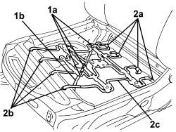

7045D19 FRONT SEAT CUSHION SPRINGING (ONE), LH OR RH - R R WITH COATING TAKEN OFF
- Path
- Procedures > 70 FITTINGS > 7045 FRONT SEATS > 7045D FRONT SEAT TRIM/PADDING > 7045D19 FRONT SEAT CUSHION SPRINGING (ONE), LH OR RH - R R WITH COATING TAKEN OFF
- Kind
- repair procedure (removal / refitting; the operation number is the code)
- Applies to
- all engines; all production periods
- Interactive page
- https://sloeber94.github.io/elrnDB-aBrrSpdr/en/#/946004154
Applies to: all engines; all production periods
 Removing
Removing
 Refitting
Refitting1. Release the wiring (1b) retainers (1a).
2. Release the retainers (2a) and (2b) and keep the springing (2c).

Applies to: all engines; all production periods
Refitting
Removing- Check that the springing is not damaged.
- Position the springing and attach the retainers.
- Connect the wiring retainers.